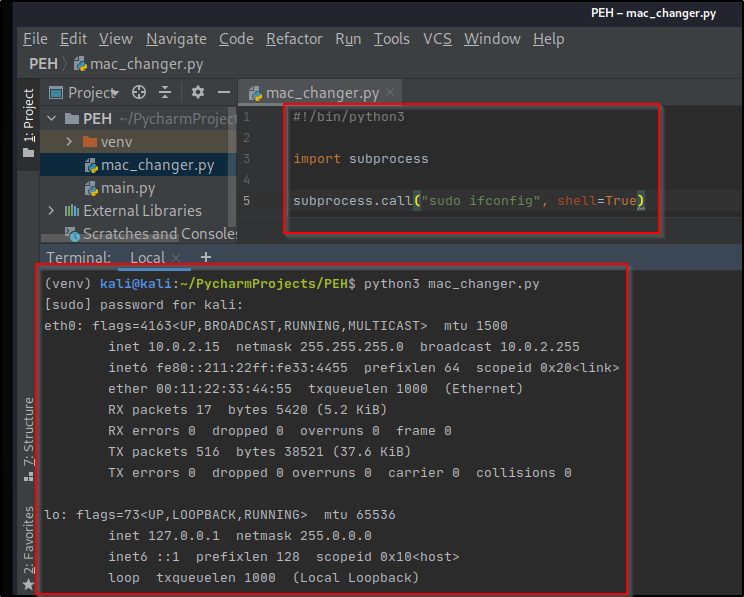

Now, we're going to write a Python script that will do this for us and don't fret if you still don't havethe basic Python knowledge but I promise that as we program, you'll get a hang of the Python language.
From what we know so far, to change the MAC address, we have to run a couple of linux commands, therefore our program must be able to execute those terminal commands, the same way we did them manually. For us to be able to execute system commands we have to use the subprocess module.
Amodule in programming is
The subprocess module contains a nmber of functions that allow us to execute system commands, and these commands depends on the OS that execute the script. Here's the the subprocess module page, I recommend broesing through and reading the documenttion.
A function is
Subprocess syntax:
import subprocess
subprocess.call("COMMAND", Shell=True)
The syntax above, subprocess.call("COMMAND", Shell=True), tell us that the module is subprocess and we're using the call function The call function allows us to run system sommands but in the foreground and not in the backgroun, waiting for the command to finish executing before moving to the next line.
NB: I'm going to be writing the codes without the use of the sudo command, because i'll be using root privileges but you could add sudo before your commands while writing the program, it won't affect the outcome..
Here's an example of the subprocess module, while using the sudo command in the program.

A simple use of the subprocess module, running the ifconfig command, so you unerstand how to import a modeule and use the subprocess.call.
Now, let's begin writing our MAC changer script.

This is the very terrible script to change our MAC address but it works, this is the exact process we followed to manually change the adress. Here's the outcome when I run it, to show you that it really does work:

As shown above, the script works, you might be wondering why I said it was terrible if it actually works. Well, the fact that it works doesn't mean it can't be better written. Think about it, what if I have my network adapter plugged in and I want to change the MAC, I won't be able to, becaus the script is hard set for eth0 alone.
So here's what we need to make this script a whole lot better:- We want to be able to get user input. What interface to change.
- We need to be able to accept input for the MAC address.
- We need to let the user know when the MAC address inputed is a wrong format.
- We need to be able to confirm that the MAC address was changed, by adding the ifconfig command in the script.
- Help message, to show the user how how to input values
To achieve these, we need to carry out the following in our script:- Create variables
- User input and handling.
- concatenation
- Arguments
- Functions
- If statement
- Regular Expressions (Regex)
Now we're going to use vriables for the parts of the script that can change depending on the users prefrence, like the interface and MAC address
In simple words, a variable is a value that can be changed through the user input or the program itself, that is stored in memory. For example, x =1. x is the varaible holding the value of 1.
Let's implement this in our script.
NB: You have to create a variable before you can call or use it and it is common practice to have meaningful variable name, names that are relevant to the value stored. Variable names are case sensitive.
Creating variables & Concatenation.


Result.
We ahve implemented the use of variables to help make the script a little better than the initial stage but it still has flaws, like not accepting user input. So the user has to manually change the MAC address from the script everytime, which would defeat the purpose of writing a script in the first place.
Getting User Input.
We'll be using the input function, to accomplish this task.

Here's the result of adding the input function to our script:

I'm going to add a print statement to the script, so that when the user runs their input, they can see it and be sure that it's what was run by the script. Like this:


Handling User Input.
Our input function is not secure, because we aren't checking to make sure that the user input is the required format or characters.If the user input is not handled, our script can be hijacked and used to do things we didn't write it for. We sure don't want that, well maybe you do but I don't.
This isn't really vital in this particular script but you definitely want to keep it in mind when you're writing other programs
I didn't mention that there are two ways of implementiing the subprocess.call function, the first one is what we've been using in ou script so for and the second way is how we can handle user input.
The second call function syntax, implements lists instead of strings. So every element in the command is a word in the list and they're seperated by a space.
A list is just a number of element taht is enclosed between square brackets [].
Here is what the script looks like using the second subprocess.call function:

This is a much more secure version than what we have been using in our script previously, 'cause Python now knows that all the elements are part of the same ifconfig command. So even if someone tries to hijacked the ifconfig variable and put a commans in their, Python will know not to treat it as a command and try executing it withing the ifconfig command which will produce an error.
So we'll get rid of our initial subprocess.call function and use this one.

Run it and we get:

This way our script will not be hijacked.
Arguments.
This script will make more sense if we let the user input the values as arguments. Arguments are values provided to the program when they are being called. To implent arguments we will be using a Python lmodule called optparse. It's a module that lets us get arguments from a user, parese and use them in our code.
NB: You have to import a module, before calling a function in it to use it.

parser is just similar to a variable, like interface or new_mac, the difference is that the value it holds is different than the value that interface or new_mac holds. Parser holds whatever OptionParser() returns
Notice the names, it's a naming convention in Python and because it starts with a capital letter, it's a class. A class is a rule for an object, so this class determines what we can do for the parser object. Don't worry, you'll get a better understanding of objects as we keep building our tools.
So we're teaching the parser object/child, telling it to allow the user to enter a value under the -i or --interface argumment. Whatever value is entered should be stored in the interface (dest) and if the user requuires help, display this help message so they know what is required, like this:


Now, lets add in the argument for the new MAC address and see the outcome:


So we have our arguments, next we need to set up the user input value and to do this, we have to use varables.

This method will return two (2) sets of information, the argument and the option. To capture this, we're using two (2) variables called option and arguments.
NB: You can use whatever names you want for your variables, they don't have to be called, options or parser, etc, but make sure they are meaningful names.
Options holds the value that the user inputs, so to acces the value for the interface, we change the interface in our subprocess.call line to options.interface, same goes for the MAC address too. So to make this process easier, we can just change the variables to hold options.interface and option.vnew_mac. Like this:

This is what we get when we run the script:

Define and Call Function.
This is a good enough program, good enough because it looks messy and needs refactoring, so we are going to use functions.
A function is a block of organized, reusable code that is used to perform a single, related action. We have used functions in our script, like the input function. Functions make our code pretty and reusable.
NB: That all the code within the defined function, have to be indented the same. Python language seperates blocks of code by their indentation.

Our function is defined, but if we don't call it, it won't run. Just like when we import a module and we have to call it to use it. So all we have to do, is call change_mac.
I'm going to delete these, because i'm already using it directly in the change_mac function.

Here's our script, lets run it and see if it still works:


We're going to create a new function to parse the user input and return the argumebts and the value antered by the user, which is what our parser block of coe does. So we'rll define a function and move the parser block of code into it.

In the get_arguments function, instead of initializing the option variable at the end, it'll return the value that the parser.parse_args() returns. So when the grt_arguments function is called, it'll capture the returned value using the option, arguments variables. So now Python know what options is equals to and our script will run without any error of an undefined function.


Looking at our script, you can see that it's much neater, much readable and reusable, 'cause anyof the functions can be used whenever we want, without having to type out a chunck of code.
Error Message.
Our script looks pretty clean but we don't have a way of letting the user know why they get an erroe, after inputting the wrong value format.
To do this we need to use if statement, for desicion making.
If statements are conditional statements. Meaning, if a statement is true a block of code will be executed and if it's false another block of code will be executed.
For our script, we want to write an if statement that checks if the user enters a value for the MAC address and only print an error message if the user didn't enter a MAC address. So the code ill only be executed if the condition of no MAC address is true.


Now lets run our script without an interface or MAC address, so we know that our error message worked.

It worked.
All that is left to be added to our script, is checking to make sure that the MAC address of the specified interface was changed, as you probably notice, I keep running ifconfig after to check that.The main purpose of building the script is to manually do as little as possible.
This requires a simple algorith, with the goal to check that the MAC address that the user requested was successfully change, this will be done at the end of the script. W're going to be using a function in the subprocess module called subprocess.check_output.
Regular Expression.
Regex is a special sequence of character that helps matvh or find specific patterns withing a string. We'll be using another Python moule called re, which stands for regex. But before we do that we need to find out the pattern of our MAC address, copy the rseult of your ifconfig command, oprn up your browser and search for pythex. Pythex allows us to build regex rules, so paste your copied result in the serach bar, click on the regex cheatsheet to get an idea of the syntax to use. I'm going to leave this for you to practice and figure out.
Here's the rule:


Here's the result:

We're going to create function for checking our MAC address, to make our script pretty and our code reusable.


We're finally done with our MAC changer script.


Next, we'll be building a network scanner.
Until next time, Keep learning. Keep Hacking. And don't forget to breathe!